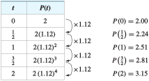
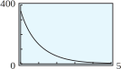

Section 4.1 Exponential Growth and Decay
Subsection Exponential Growth
The functions in Investigation 4.1 describe exponential growth. During each time interval of a fixed length, the population is multiplied by a certain constant amount. In Part A, the bacteria population grows by a factor of \(3\) every day.

For this reason, we say that \(3\) is the growth factor for the function. Functions that describe exponential growth can be expressed in a standard form.
Exponential Growth.
\(\begin{aligned}[t] \amp\text{where }\amp\amp P_0 = P(0)\amp\amp\text{is the } \blert{\textbf{ initial value}},\\ \amp\text{and} \amp\amp b\amp\amp \text{is the }\blert{\textbf{ growth factor}}. \end{aligned}\)
For the bacteria population, we have
so \(P_0 = 100\) and \(b = 3\text{.}\)
Checkpoint 4.1. QuickCheck 1.
Example 4.2.
A colony of bacteria starts with \(300\) organisms and doubles every week.
Write a formula for the population of the bacteria colony after \(t\) weeks.
How many bacteria will there be after \(8\) weeks? After \(5\) days?
-
The initial value of the population was \(P_0 = 300\text{,}\) and its weekly growth factor is \(b = 2\text{.}\) Thus, a formula for the population after \(t\) weeks is
\begin{equation*} P(t) = 300 \cdot 2^t \end{equation*} -
After \(8\) weeks, the population will be
\begin{equation*} P(8) = 300 \cdot 2^8 = 76,800 \text{ bacteria} \end{equation*}Because \(5\) days is \(\frac{5}{7}\) of a week, after \(5\) days the population will be
\begin{equation*} P\left(\frac{5}{7}\right)= 300 \cdot 2^{5/7} = 492.2 \end{equation*}We cannot have a fraction of a bacterium, so we round to the nearest whole number, \(492\text{.}\)
Caution 4.3.
In Example 4.2a, note that
According to the order of operations, we compute the power \(2^8\) first, then multiply by \(300\text{.}\)
Checkpoint 4.4. Practice 1.
Checkpoint 4.5. QuickCheck 2.
Subsection Growth Factors
In Part B of Investigation 4.1, the rabbit population grew by a factor of \(2\) every \(3\) months.

To write the growth formula for this population, we divide the value of \(t\) by \(3\) to find the number of doubling periods.
Now we need some algebra to see the growth factor for the function. We use the third law of exponents to write \(2^{t/3}\) in another form. Recall that to raise a power to a power, we multiply exponents, so
The growth law for the rabbit population is thus
The initial value of the function is \(P_0 = 60\text{,}\) and the growth factor is \(b = 2^{1/3}\text{,}\) or approximately \(1.26\text{.}\) The rabbit population grows by a factor of about \(1.26\) every month.
Checkpoint 4.6. QuickCheck 3.
If the units are the same, a population with a larger growth factor grows faster than one with a smaller growth factor.
Example 4.7.
A lab technician compares the growth of \(2\) species of bacteria. She starts \(2\) colonies of \(50\) bacteria each. Species A doubles in population every \(2\) days, and species B triples every \(3\) days. Find the growth factor for each species.
A function describing the growth of species A is
so the growth factor for species A is \(\alert{2^{1/2}}\text{,}\) or approximately \(1.41\text{.}\) For species B,
so the growth factor for species B is \(\alert{3^{1/3}}\text{,}\) or approximately \(1.44\text{.}\) Species B grows faster than species A.
Checkpoint 4.8. Practice 2.
Subsection Percent Increase
Exponential growth occurs in other circumstances, too. For example, if the interest on a savings account is compounded annually, the amount of money in the account grows exponentially.
Consider a principal of $100 invested at 5% interest compounded annually. At the end of \(1\) year, the amount is
It will be more useful to write the formula for the amount after \(1\) year in factored form.
With this version of the formula, the calculation for the amount at the end of \(1\) year looks like this:
The amount, $105, becomes the new principal for the second year. To find the amount at the end of the second year, we apply the formula again, with \(P = 105\text{.}\)
Observe that to find the amount at the end of each year, we multiply the principal by a factor of \(1 + r = 1.05\text{.}\) Thus, we can express the amount at the end of the second year as
and at the end of the third year as
At the end of each year, we multiply the old balance by another factor of \(1.05\) to get the new amount. We organize our results into a table, where \(A(t)\) represents the amount of money in the account after \(t\) years. For this example, a formula for the amount after \(t\) years is
| \(t\) | \(P(1 + r)^t\) | \(A(t)\) |
| \(0\) | \(100\) | \(100\) |
| \(1\) | \(100(1.05)\) | \(105\) |
| \(2\) | \(100(1.05)^2\) | \(110.25\) |
| \(3\) | \(100(1.05)^3\) | \(115.76\) |
In general, for an initial investment of \(P\) dollars at an interest rate \(r\) compounded annually, we have the following formula for the amount accumulated after \(t\) years.
Compound Interest.
The amount \(A(t)\) accumulated (principal plus interest) in an account bearing interest compounded annually is
where
This function describes exponential growth with an initial value of \(P\) and a growth factor of \(b = 1 + r\text{.}\)
Note 4.9.
The notion of percent increase is often used to describe the growth factor for quantities that grow exponentially. Note carefully the distinction between the percent increase, \(r\text{,}\) and the growth factor, \(b=1+r\text{.}\)
Checkpoint 4.10. QuickCheck 4.
Example 4.11.
During a period of rapid inflation, prices rose by \(12\)% over \(6\) months. At the beginning of the inflationary period, a pound of butter cost $\(2\text{.}\)
Make a table of values showing the rise in the cost of butter over the next \(2\) years.
Write a function that gives the price of a pound of butter \(t\) years after inflation began.
How much did a pound of butter cost after \(3\) years? After \(15\) months?
Graph the function you found in part (b).
-
The percent increase in the price of butter is \(12\)% every \(6\) months. Therefore, the growth factor for the price of butter is \(1 + 0.12 = 1.12\) every half-year. If \(P(t)\) represents the price of butter after \(t\) years, then \(P(0) = 2\text{,}\) and every half-year we multiply the price by \(1.12\text{,}\) as shown in the table.
 -
Look closely at the second column of the table. After \(t\) years of inflation, the original price of $\(2\) has been multiplied by \(2t\) factors of \(1.12\text{.}\) Thus,
\begin{equation*} P = 2(1.12)^{2t} \end{equation*} -
To find the price of butter at any time after inflation began, we evaluate the function at the appropriate value of \(t\text{.}\)
\begin{equation*} \begin{aligned}[t] P(\alert{3}) \amp = 2(1.12)^{2(\alert{3})} \\ \amp = 2(1.12)^6 \approx 3.95 \end{aligned} \end{equation*}After \(3\) years, the price was $\(3.95\text{.}\) Fifteen months is \(1.25\) years, so we evaluate \(P(1.25)\text{.}\)
\begin{equation*} \begin{aligned}[t] P(\alert{1.25}) \amp = 2(1.12)^{2(\alert{1.25})} \\ \amp = 2(1.12)^{2.5} \approx 2.66 \end{aligned} \end{equation*}After \(15\) months, the price of butter was $\(2.66\text{.}\)
-
Evaluate the function
\begin{equation*} P(t) = 2(1.12)^{2t} \end{equation*}for several values, as shown in the table below. We plot the points and connect them with a smooth curve to obtain the graph shown in the figure at right below.
\(t\) \(P(t)\) \(0\) \(2.00\) \(1\) \(2.51\) \(2\) \(3.15\) \(3\) \(3.95\) \(4\) \(4.95\) 
In Example 4.11, we can rewrite the formula for \(P(t)\) as follows:
Thus, the annual growth factor for the price of butter is \(1.2544\text{,}\) and the annual percent growth rate is \(25.44\)%.
Checkpoint 4.12. Practice 3.
Another graph:

Checkpoint 4.13. Pause and Reflect.
Subsection Exponential Decay
In the preceding examples, exponential growth was modeled by increasing functions of the form
where \(b \gt 1\text{.}\) The function \(P(t) = P_0b^t\) is a decreasing function if \(0 \lt b \lt 1\text{.}\) In this case, we say that the function describes exponential decay, and the constant \(b\) is called the decay factor. In Investigation 4.2, we consider two examples of exponential decay.
Investigation 4.2. Exponential Decay.
-
A small coal-mining town has been losing population since 1940, when 5000 people lived there. At each census thereafter (taken at 10-year intervals), the population declined to approximately 0.90 of its earlier figure.
\(t\) \(P(t)\) \(0\) \(5000\) \(P(0)=5000\) \(10\) \(\) \(P(10)=5000\cdot 0.90=\) \(20\) \(\) \(P(20)=[5000\cdot 0.90]\cdot 0.90=\) \(30\) \(\) \(P(3)=\) \(40\) \(\) \(P(4)=\) \(50\) \(\) \(P(5)=\) Fill in the table showing the population \(P(t)\) of the town \(t\) years after 1940.
Plot the data points and connect them with a smooth curve.
-
Write a function that gives the population of the town at any time \(t\) in years after 1940.
Hint: Express the values you calculated in part (1) using powers of \(0.90\text{.}\) Do you see a connection between the value of \(t\) and the exponent on \(0.90\text{?}\)
Graph your function from part (3) using a calculator. (Use the table to choose an appropriate domain and range.) The graph should resemble your hand-drawn graph from part (2).
Evaluate your function to find the population of the town in 1995. What was the population in 2000?

-
A plastic window coating \(1\) millimeter thick decreases the light coming through a window by \(25\)%. This means that \(75\)% of the original amount of light comes through \(1\) millimeter of the coating. Each additional millimeter of coating reduces the light by another \(25\)%.
Fill in the table showing the percent of the light, \(P(x)\text{,}\) that shines through \(x\) millimeters of the window coating.
-
Plot the data points and connect them with a smooth curve.
\(x\) \(P(x)\) \(0\) \(100\) \(P(0)=100\) \(1\) \(\) \(P(1)=100\cdot 0.75=\) \(2\) \(\) \(P(2)=[100\cdot 0.75]\cdot 0.75=\) \(3\) \(\) \(P(3)=\) \(4\) \(\) \(P(4)=\) \(5\) \(\) \(P(5)=\) 
-
Write a function that gives the percent of the light that shines through \(x\) millimeters of the coating.
Hint: Express the values you calculated in part (1) using powers of \(0.75\text{.}\) Do you see a connection between the value of \(x\) and the exponent on \(0.75\text{?}\)
Graph your function from part (3) using a calculator. (Use your table of values to choose an appropriate domain and range.) The graph should resemble your hand-drawn graph from part (2).
Evaluate your function to find the percent of the light that comes through 6 millimeters of plastic coating. What percent comes through \(\dfrac{1}{2}\) millimeter?
Subsection Decay Factors
Before Example 4.11, we noted that a percent increase of \(r\) (in decimal form) corresponds to a growth factor of \(b = 1 + r\text{.}\) A percent decrease of \(r\) corresponds to a decay factor of \(b = 1 - r\text{.}\) In Part B of Investigation 4.2, each millimeter of plastic reduced the amount of light by \(25\)%, so \(r = 0.25\text{,}\) and the decay factor for the function \(P(x)\) is
Caution 4.14.
Note the difference in the two expressions for \(b\text{:}\)
A percent increase of \(r\) produces a growth factor of \(b=1+r\text{.}\)
A percent decrease of \(r\) produces a decay factor of \(b=1-r\text{.}\)
Checkpoint 4.15. QuickCheck 5.
Example 4.16.
David Reed writes in Context magazine: "Computing prices have been falling exponentially—50% every 18 months—for the past 30 years and will probably stay on that curve for another couple of decades." An accounting firm invests $50,000 in new computer equipment.
Write a formula for the value of the equipment \(t\) years from now.
By what percent does the equipment depreciate each year?
What will the equipment be worth in \(5\) years?
-
The initial value of the equipment is \(V_0 = 50,000\text{.}\) Every \(18\) months, the value of the equipment is multiplied by
\begin{equation*} b = 1 - r = 1 - 0.50 = 0.50 \end{equation*}However, because \(18\) months is \(1.5\) years, we must divide \(t\) by \(1.5\) in our formula, giving us
\begin{equation*} V(t) = 50,000(0.50)^{t/1.5} \end{equation*} -
After \(1\) year, we have
\begin{equation*} V(1) = 50,000(0.50)^{1/1.5} = 50,000(0.63) \end{equation*}The equipment is worth \(63\)% of its original value, so it has depreciated by \(1 - 0.63\text{,}\) or \(37\)%.
-
After \(5\) years,
\begin{equation*} V(5) = 50,000(0.50)^{5/1.5} = 4960.628 \end{equation*}To the nearest dollar, the equipment is worth $4961.
Checkpoint 4.17. Practice 4.
We summarize our observations about exponential growth and decay functions as follows.
Exponential Growth and Decay.
The function
models exponential growth and decay.
\(P_0 =P(0)\) is the initial value of \(P\text{;}\)
\(b\) is the growth or decay factor.
If \(b \gt 1\text{,}\) then \(P(t)\) is increasing, and \(b = 1 + r\text{,}\) where \(r\) represents percent increase.
If \(0 \lt b \lt 1\text{,}\) then \(P(t)\) is decreasing, and \(b = 1 - r\text{,}\) where \(r\) represents percent decrease.
Checkpoint 4.18. QuickCheck 6.
Subsection Comparing Linear Growth and Exponential Growth
It may be helpful to compare linear growth and exponential growth. Consider the two functions
whose graphs are shown below.
| \(t\) | \(L(t)\) |
| \(0\) | \(5\) |
| \(1\) | \(7\) |
| \(2\) | \(9\) |
| \(3\) | \(11\) |
| \(4\) | \(13\) |
Slope \(m=2\)
| \(t\) | \(E(t)\) |
| \(0\) | \(5\) |
| \(1\) | \(10\) |
| \(2\) | \(20\) |
| \(3\) | \(40\) |
| \(4\) | \(80\) |
Growth factor \(b=2\)

\(L\) is a linear function with initial value \(5\) and slope \(2\text{;}\) \(E\) is an exponential function with initial value \(5\) and growth factor \(2\text{.}\) In a way, the growth factor of an exponential function is analogous to the slope of a linear function: Each measures how quickly the function is increasing (or decreasing).
However, for each unit increase in \(t\text{,}\) \(2\) units are added to the value of \(L(t)\text{,}\) whereas the value of \(E(t)\) is multiplied by \(2\text{.}\) An exponential function with growth factor \(2\) eventually grows much more rapidly than a linear function with slope \(2\text{,}\) as you can see by comparing the graphs in the figure or the function values in the tables.
Checkpoint 4.19. QuickCheck 7.
Example 4.20.
A solar energy company sold $\(80,000\) worth of solar collectors last year, its first year of operation. This year its sales rose to $\(88,000\text{,}\) an increase of \(10\)%. The marketing department must estimate its projected sales for the next \(3\) years.
If the marketing department predicts that sales will grow linearly, what should it expect the sales total to be next year? Graph the projected sales figures over the next \(3\) years, assuming that sales will grow linearly.
If the marketing department predicts that sales will grow exponentially, what should it expect the sales total to be next year? Graph the projected sales figures over the next \(3\) years, assuming that sales will grow exponentially.
-
Let \(L(t)\) represent the company's total sales \(t\) years after starting business, where \(t = 0\) is the first year of operation. If sales grow linearly, then \(L(t)\) has the form \(L(t) = mt + b\text{.}\) Now \(L(0) = 80,000\text{,}\) so the intercept \(b\) is \(80,000\text{.}\) The slope \(m\) of the graph is
\begin{equation*} \frac{\Delta S}{\Delta t}= \frac{8000 \text{ dollars}}{1\text{ year}}= 8000 \text{ dollars/year} \end{equation*}where \(\Delta S = 8000\) is the increase in sales during the first year. Thus, \(L(t) = 8000t + 80,000\text{,}\) and sales grow by adding $\(8000\) each year. The expected sales total for the next year is
\begin{equation*} L(2) = 8000(2) + 80,000 = 96,000 \end{equation*} -
Let \(E(t)\) represent the company's sales assuming that sales will grow exponentially. Then \(E(t)\) has the form \(E(t) = E_0b^t\) . The percent increase in sales over the first year was \(r = 0.10\text{,}\) so the growth rate is
\begin{equation*} b = 1 + r = 1.10 \end{equation*}The initial value, \(E_0\text{,}\) is \(80,000\text{.}\) Thus, \(E(t) = 80,000(1.10)^t\text{,}\) and sales grow by being multiplied each year by \(1.10\text{.}\) The expected sales total for the next year is
\begin{equation*} E(2) = 80,000(1.10)^2= 96,800 \end{equation*}
We evaluate each function at several points to obtain the graphs shown in the figure.
| \(t\) | \(L(t)\) | \(E(t)\) |
| \(0\) | \(80,000\) | \(80,000\) |
| \(1\) | \(88,000\) | \(88,000\) |
| \(2\) | \(96,000\) | \(96,800\) |
| \(3\) | \(104,000\) | \(106,480\) |
| \(4\) | \(112,000\) | \(117,128\) |

Checkpoint 4.21. Practice 5.
Checkpoint 4.22. Pause and Reflect.
Subsection Section Summary
Subsubsection Vocabulary
Look up the definitions of new terms in the Glossary.
Exponential growth
Initial value
Exponential decay
Percent increase
Compound interest
Growth factor
Amount
Subsubsection CONCEPTS
If a quantity is multiplied by a constant factor, \(b\text{,}\) in each time period, we say that it undergoes exponential growth or decay. The constant \(b\) is called the growth factor if \(b\gt 1\) and the decay factor if \(0 \lt b \lt 1\text{.}\)
Quantities that increase or decrease by a constant percent in each time period grow or decay exponentially.
Exponential Growth and Decay.
The function
\begin{equation*} P(t) = P_0 b^t \end{equation*}models exponential growth and decay.
\(P_0 = P(0) \) is the initial value of \(P\text{;}\)
\(b\) is the growth or decay factor.
If \(b\gt 1\text{,}\) then \(P(t)\) is increasing, and \(b = 1 + r\text{,}\) where \(r\) represents percent increase.
If \(0\lt b\lt 1\text{,}\) then \(P(t)\) is decreasing, and \(b = 1 - r\text{,}\) where \(r\) represents percent decrease.
Compound Interest.
The amount \(A(t)\) accumulated (principal plus interest) in an account bearing interest compounded annually is
\begin{equation*} A(t) = P(1 + r)^t \end{equation*}where
\(P\) \(\) is the principal invested, \(r\) \(\) is the interest rate, \(t\) \(\) is the time period, in years In linear growth, a constant amount is added to the output for each unit increase in the input. In exponential growth, the output is multiplied by a constant factor for each unit increase in the input.
Subsubsection STUDY QUESTIONS
Is it possible for two populations with the same initial value to grow at different percent rates?
If you know the percent growth rate, how can you find the growth factor? If you know the percent decay rate, how can you find the decay factor?
What is the growth factor for a population that grows \(4\%\) annually?
What is the decay factor for a population that declines by \(4\%\) annually?
What is the growth factor for a population that grows by \(100\%\) annually?
Explain the difference between the slope in linear growth and the growth factor in exponential growth.
Subsubsection SKILLS
Practice each skill in the Homework problems listed.
Calculate percent increase or decrease: #1–10–6
Write a formula for exponential growth or decay: #11–22
Evaluate an exponential growth or decay function: #11–22
Simplify exponential expressions: #23–32
Solve power equations: #33–40
Find the growth factor or initial value: #41–58
Solve for percent increase or decrease: #63–66
Exercises Homework 4.1
1.
A parking permit at Huron College cost $\(25\) last year, but this year the price increased by \(12\%\text{.}\) What is the price this year?
If the price of a parking permit increases by \(12\%\) again next year, what will the price be then?
$\(28\)
$\(31.36\)
2.
The computer you want cost $\(1200\) when it first came on the market, but after \(3\) months the price was reduced by \(15\%\text{.}\) What was the price then?
If the price falls by another \(15\%\) next month, what will the price be then?
3.
The value of your stock portfolio fell \(10\%\) last year, but this year it increased by \(10\%\text{.}\) How does the current value of your portfolio compare to what it was two years ago?
It is \(99\%\) of what it was \(2\) years ago.
4.
You got a \(5\%\) raise in January, but then in March everyone took a pay cut of \(5\%\text{.}\) How does your new salary compare to what it was last December?
5.
The population of Summerville is currently \(12\) hundred people.
Write a formula for the population if it grows at a constant rate of \(1.5\) hundred people per year. What is the population after \(3\) years?
Write a formula for the population if it has a constant growth factor of \(1.5\) per year. What is the population after \(3\) years?
\(P = 1200 + 150t\text{;}\) \(1650\)
\(P = 1200\cdot 1.5^t\text{;}\) \(4050\)
6.
Delbert's sports car was worth $\(45,000\) when he bought it.
Write a formula for the value of the car if it depreciates at a constant rate of $\(7000\) per year. What is the value of the car after \(4\) years?
Write a formula for the value of the car if it has a constant depreciation factor of \(0.70\) per year. What is the value of the car after \(4\) years?
7.
Francine's truck was worth $\(18,000\) when she bought it.
Write a formula for the value of the truck if it depreciates by $\(2000\) per year. What is the value of the truck after \(5\) years?
Write a formula for the value of the truck if it depreciates by \(20\%\) per year. What is the value of the truck after \(5\) years?
\(V = 18,000 - 2000t\text{;}\) $\(8000\)
\(V = 18,000\cdot 0.8^t\text{;}\) $\(5898.24\)
8.
The population of Lakeview is currently \(150,000\) people.
Write a formula for the population if it grows by \(6000\) people per year. What is the population after \(2\) years?
Write a formula for the population if grows by \(6\%\) per year. What is the population after \(2\) years?
9.
The table shows the growth factor for a number of different populations. For each population, find the percent growth rate.
| Population | \(A\) | \(B\) | \(C\) | \(D\) | \(E\) |
| Growth factor | \(1.2\) | \(1.02\) | \(1.075\) | \(2.0\) | \(2.15\) |
| Percent growth rate | \(\hphantom{00000}\) | \(\hphantom{00000}\) | \(\hphantom{00000}\) | \(\hphantom{00000}\) | \(\hphantom{00000}\) |
A: \(20\%\text{;}\) B: \(2\%\text{;}\) C: \(7.5\%\text{;}\) D: \(100\%\text{;}\) E: \(115\%\)
10.
The table shows the decay factor for a number of different populations. For each population, find the percent growth rate.
| Population | \(A\) | \(B\) | \(C\) | \(D\) | \(E\) |
| Decay factor | \(0.6\) | \(0.06\) | \(0.96\) | \(0.996\) | \(0.096\) |
| Percent decay rate | \(\hphantom{00000}\) | \(\hphantom{00000}\) | \(\hphantom{00000}\) | \(\hphantom{00000}\) | \(\hphantom{00000}\) |
Exercise Group.
For Problems 11–16,
Write a function that describes exponential growth.
Graph the function.
Evaluate the function at the given values.
11.
A typical beehive contains \(20,000\) insects. The population can increase in size by a factor of \(2.5\) every \(6\) weeks. How many bees could there be after \(4\) weeks? After \(20\) weeks?
\(\displaystyle P = 20,000\cdot 2.5^{t/6}\)

\(36,840\) bees; \(424,128\) bees
12.
A rancher who started with \(800\) head of cattle finds that his herd increases by a factor of \(1.8\) every \(3\) years. How many head of cattle will he have after \(1\) year? After \(10\) years?
13.
A sum of $\(4000\) is invested in an account that pays \(8\%\) interest compounded annually. How much is in the account after \(2\) years? After \(10\) years?
\(\displaystyle A = 4000\cdot 1.08^t\)

$\(4665.60\text{;}\) $\(8635.70\)
14.
Otto invests $\(600\) in an account that pays \(7.3\%\) interest compounded annually. How much is in Otto's account after \(3\) years? After \(6\) years?
15.
Paul bought a house for $\(200,000\) in \(2003\text{.}\) Since \(2003\text{,}\) housing prices have risen an average of \(5\%\) per year. How much was the house worth in \(2015\text{?}\) How much will it be worth in 2030?
\(\displaystyle P = 200,000\cdot 1.05^t\)

$\(359,171\text{;}\) $\(746,691\)
16.
Sales of Windsurfers have increased \(12\%\) per year since \(2010\text{.}\) If Sunsails sold \(1500\) Windsurfers in \(2010\text{,}\) how many did it sell in \(2015\text{?}\) How many should it expect to sell in \(2022\text{?}\)
Exercise Group.
For Problems 17–22,
Write a function that describes exponential decay.
Graph the function.
Evaluate the function at the given values.
17.
During a vigorous spraying program, the mosquito population was reduced to \(\dfrac{3}{4} \) of its previous size every \(2\) weeks. If the mosquito population was originally estimated at \(250,000\text{,}\) how many mosquitoes remained after \(3\) weeks of spraying? After \(8\) weeks?
\(\displaystyle P = 250,000\cdot 0.75^{t/2}\)

\(162,380\text{;}\) \(79,102\)
18.
The number of perch in Hidden Lake has declined to half of its previous value every \(5\) years since 1985, when the perch population was estimated at \(8000\text{.}\) How many perch were there in 1995? In 2013?
19.
Scuba divers find that the water in Emerald Lake filters out \(15\%\) of the sunlight for each \(4\) feet that they descend. How much sunlight penetrates to a depth of \(20\) feet? To a depth of \(45\) feet?
\(\displaystyle L = 0.85^{d/4}\)

\(44\%\text{;}\) \(16\%\)
20.
Arch's motorboat cost $\(15,000\) in \(2005\) and has depreciated by \(10\%\) every \(3\) years. How much was the boat worth in \(2014\text{?}\) In \(2015\text{?}\)
21.
Plutonium-238 is a radioactive element that decays over time into a less harmful element at a rate of \(0.8\%\) per year. A power plant has \(50\) pounds of plutonium-238 to dispose of. How much plutonium-238 will be left after \(10\) years? After \(100\) years?
\(\displaystyle P = 50\cdot 0.992^t\)

\(46.1\) lb; \(22.4\) lb
22.
Iodine-131 is a radioactive element that decays at a rate of \(8.3\%\) per day. How much of a \(12\)-gram sample will be left after \(1\) week? After \(15\) days?
Exercise Group.
In Problems 23–26, use the laws of exponents to simplify.
23.
\(\displaystyle 3^x \, 3^4\)
\(\displaystyle (3^x)^4\)
\(\displaystyle 3^x \, 4^x\)
\(\displaystyle 3^{x+4}\)
\(\displaystyle 3^{4x}\)
\(\displaystyle 12^x \)
24.
\(\displaystyle 8^x \, 8^x\)
\(\displaystyle 8^{x+2} \, 8^{x-1} \)
\(\displaystyle \dfrac{8^{2x}}{8^x} \)
25.
\(\displaystyle b^{-4t} \, b^{2t} \)
\(\displaystyle (b^t)^{1/2} \)
\(\displaystyle b^{t-1} \, b^{1-t} \)
\(\displaystyle b^{-2t} \)
\(\displaystyle b^{t/2} \)
\(\displaystyle 1\)
26.
\(\displaystyle b^{t/2} \, b^{t/2} \)
\(\displaystyle \dfrac{b^{2t}}{b} \)
\(\displaystyle b^{1/t} \, b^t \)
27.
Let \(P(t) = 12(3)^t\text{.}\) Show that \(P(t + 1) = 3P(t)\text{.}\)
\(P (t + 1) = 12 (3)^{t+1}= 12 (3)^{t}\cdot 3= P(t) \cdot 3 \)
28.
Let \(N(t) = 8(5)^t\text{.}\) Show that \(\dfrac{N(t + k)}{N(t)}= 5^k\)
29.
Let \(P(x) = P_0 a^x\text{.}\) Show that \(P(x+k) = a^k P(x)\text{.}\)
\(P (x+k) = P_0 a^{x+k} = P_0 a^{x}\cdot a^k = P(x) \cdot a^k \)
30.
Let \(N(x) = N_0 b^x\text{.}\) Show that \(\dfrac{N(x+1)}{N(x)}= b\)
31.
Explain why \(P(t) = 2\cdot 3^t\) and \(Q(t) = 6^t\) are not the same function.
-
Complete the table of values for \(P\) and \(Q\text{,}\) showing that their values are not the same.
\(t\) \(0\) \(1\) \(2\) \(P(t)\) \(\hphantom{000} \) \(\hphantom{000} \) \(\hphantom{000} \) \(Q(t)\) \(\hphantom{000} \) \(\hphantom{000} \) \(\hphantom{000} \)
In the expression \(2\cdot 3^t\text{,}\) only the \(3\) is raised to a power \(t\text{,}\) and the result is doubled, but if both the \(2\) and the \(3\) were raised to the power \(t\text{,}\) the result would be \(6^t\text{.}\)
\(t\) \(0\) \(1\) \(2\) \(P(t)\) \(2\) \(6\) \(18\) \(Q(t)\) \(1\) \(6\) \(36\)
32.
Explain why \(P(t) = 4\cdot \left(\dfrac{1}{2}\right)^t\) and \(Q(t) = 2^t\) are not the same function.
-
Complete the table of values for \(P\) and \(Q\text{,}\) showing that their values are not the same.
\(t\) \(0\) \(1\) \(2\) \(P(t)\) \(\hphantom{000} \) \(\hphantom{000} \) \(\hphantom{000} \) \(Q(t)\) \(\hphantom{000} \) \(\hphantom{000} \) \(\hphantom{000} \)
Exercise Group.
Solve each equation. (See Section 3.3 to review solving equations involving powers of the variable.) Round your answer to two places if necessary.
33.
\(768 = 12b^3\)
\(4\)
34.
\(75 = 3b^4\)
35.
\(14,929.92 = 5000b^6\)
\(1.2\)
36.
\(151,875 = 20,000b^5\)
37.
\(1253 = 260(1 + r )^{12}\)
\(r\approx 0.14\)
38.
\(116,473 = 48,600(1 + r )^{15}\)
39.
\(56.27 = 78(1 - r )^8\)
\(r\approx 0.04\)
40.
\(10.56 = 12.4(1 - r )^{20}\)
41.
Riverside County is the fastest growing county in California. In \(2000\text{,}\) the population was \(1,545,387\text{.}\) Write a formula for the population of Riverside County. (You do not know the value of the growth factor, \(b\text{,}\) yet.)
In \(2004\text{,}\) the population had grown to \(1,871,950\text{.}\) Find the growth factor and the percent rate of growth, rounded to the nearest tenth of a percent.
Estimate the population of Riverside County in \(2010\text{.}\)
\(\displaystyle P(t) = 1,545,387b^t\)
Growth factor \(1.049\text{;}\) Percent rate of growth \(4.9\%\)
\(\displaystyle 2,493,401\)
42.
In \(2006\text{,}\) a new Ford Focus cost \(\$15,574\text{.}\) The value of a Focus decreases exponentially over time. Write a formula for the value of a Focus. (You do not know the value of the decay factor, \(b\text{,}\) yet.)
A \(2\)-year old Focus cost \(\$11,788\text{.}\) Find the decay factor and the percent rate of depreciation, rounded to the nearest tenth of a percent.
About how much would a \(4\)-year old Focus cost?
43.
In the 1940s, David Lack undertook a study of the European robin. He tagged \(130\) one-year-old robins and found that on average \(35.6\%\) of the birds survived each year. (Source: Burton, 1998)
According to the data, how many robins would have originally hatched to produce \(130\) one-year-olds?
Write a formula for the number of the original robins still alive after \(t\) years.
Graph your function.
One of the original robins actually survived for \(9\) years. How many robins does the model predict will survive for \(9\) years?
\(\displaystyle 365\)
\(\displaystyle N(t) = 365(0.356)^t\)
- 
\(0.03\text{.}\) (Therefore, none)
44.
Many insects grow by discrete amounts each time they shed their exoskeletons. Dyar's rule says that the size of the insect increases by a constant ratio at each stage. (Source: Burton, 1998)
Dyar measured the width of the head of a caterpillar of a swallowtail butterfly at each stage. The caterpillar's head was initially approximately \(42\) millimeters wide, and \(63.84\) millimeters wide after its first stage. Find the growth ratio.
Write a formula for the width of the caterpillar's head at the \(n\)th stage.
Graph your function.
What head width does the model predict after \(5\) stages?
Exercise Group.
For Problems 45–54,
Each table describes exponential growth or decay. Find the growth or decay factor.
Complete the table. Round values to two decimal places if necessary.
45.
| \(t\) | \(0\) | \(1\) | \(2\) | \(3\) | \(4\) |
| \(P\) | \(~~8~~\) | \(12\) | \(18\) | \(\hphantom{000}\) | \(\hphantom{000}\) |
The growth factor is \(1.5\text{.}\)
| \(t\) | \(0\) | \(1\) | \(2\) | \(3\) | \(4\) |
| \(P\) | \(~8~\) | \(12\) | \(18\) | \(27\) | \(40.5\) |
46.
| \(t\) | \(0\) | \(1\) | \(2\) | \(3\) | \(4\) |
| \(P\) | \(~~4~~\) | \(~~5~~\) | \(6.25\) | \(\hphantom{000}\) | \(\hphantom{000}\) |
47.
| \(x\) | \(0\) | \(1\) | \(2\) | \(3\) | \(4\) |
| \(Q\) | \(20\) | \(24\) | \(\hphantom{000}\) | \(\hphantom{000}\) | \(\hphantom{000}\) |
The growth factor is \(1.2\text{.}\)
| \(x\) | \(0\) | \(1\) | \(2\) | \(3\) | \(4\) |
| \(Q\) | \(20\) | \(24\) | \(28.8\) | \(34.56\) | \(41.47\) |
48.
| \(x\) | \(0\) | \(1\) | \(2\) | \(3\) | \(4\) |
| \(Q\) | \(100\) | \(105\) | \(\hphantom{000}\) | \(\hphantom{000}\) | \(\hphantom{000}\) |
49.
| \(w\) | \(0\) | \(1\) | \(2\) | \(3\) | \(4\) |
| \(N\) | \(120\) | \(96\) | \(\hphantom{000}\) | \(\hphantom{000}\) | \(\hphantom{000}\) |
The decay factor is \(0.8\text{.}\)
| \(w\) | \(0\) | \(1\) | \(2\) | \(3\) | \(4\) |
| \(N\) | \(120\) | \(96\) | \(76.8\) | \(61.44\) | \(49.15\) |
50.
| \(w\) | \(0\) | \(1\) | \(2\) | \(3\) | \(4\) |
| \(N\) | \(640\) | \(480\) | \(\hphantom{000}\) | \(\hphantom{000}\) | \(\hphantom{000}\) |
51.
| \(t\) | \(0\) | \(1\) | \(2\) | \(3\) | \(4\) |
| \(C\) | \(10\) | \(\hphantom{000}\) | \(6.4\) | \(\hphantom{000}\) | \(\hphantom{000}\) |
The decay factor is \(0.8\text{.}\)
| \(t\) | \(0\) | \(1\) | \(2\) | \(3\) | \(4\) |
| \(C\) | \(10\) | \(8\) | \(6.4\) | \(5.12\) | \(4.10\) |
52.
| \(t\) | \(0\) | \(1\) | \(2\) | \(3\) | \(4\) |
| \(C\) | \(20\) | \(\hphantom{000}\) | \(\hphantom{000}\) | \(2.5\) | \(\hphantom{000}\) |
53.
| \(n\) | \(0\) | \(1\) | \(2\) | \(3\) | \(4\) |
| \(B\) | \(200\) | \(\hphantom{000}\) | \(\hphantom{000}\) | \(266.2\) | \(\hphantom{000}\) |
The growth factor is \(1.1\text{.}\)
| \(n\) | \(0\) | \(1\) | \(2\) | \(3\) | \(4\) |
| \(B\) | \(200\) | \(220\) | \(242\) | \(266.2\) | \(292.82\) |
54.
| \(n\) | \(0\) | \(1\) | \(2\) | \(3\) | \(4\) |
| \(B\) | \(40\) | \(\hphantom{000}\) | \(62.5\) | \(\hphantom{000}\) | \(\hphantom{000}\) |
Exercise Group.
Each graph in Problems 55–58 represents exponential growth or decay.
Find the initial value and the growth or decay factor.
Write a formula for the function.


59.
If \(8\%\) of the air leaks out of Brian's bicycle tire every day, what percent of the air will be left after \(2\) days? After a week?
\(84.6\%\text{,}\) \(55.8\%\)
60.
If housing prices are increasing by \(15\%\) per year, by what percent will they increase in \(2\) years? In \(3\) years?
61.
Francine says that if a population grew by \(48\%\) in \(6\) years, then it grew by \(8\%\) per year. Is she correct? Either justify or correct her calculation.
No, an increase of \(48\%\) in \(6\) years corresponds to a growth factor of \(1.48^{1/6}\approx 1.0675\text{,}\) or an annual growth rate of about \(6.75\%\text{.}\)
62.
Delbert says that if a population decreased by \(60\%\) in 5 years, then it decreased by \(12\%\) per year. Is he correct? Either justify or correct his calculation.
Exercise Group.
In Problems 63–66, assume that each population grows exponentially with constant annual percent increase, \(r\text{.}\)
63.
The population of the state of Texas was \(16,986,335\) in \(1990\text{.}\) Write a formula in terms of \(r\) for the population of Texas \(t\) years later.
In \(2000\text{,}\) the population was \(20,851,820\text{.}\) Write an equation and solve for \(r\text{.}\) What was the annual percent increase to the nearest hundredth of a percent?
\(\displaystyle P(t) = 16,986,335(1 + r)^t\)
\(\displaystyle 2.07\%\)
64.
The population of the state of Florida was \(12,937,926\) in \(1990\text{.}\) Write a formula in terms of \(r\) for the population of Florida \(t\) years later.
In \(2000\text{,}\) the population was \(15,982,378\text{.}\) Write an equation and solve for \(r\text{.}\) What was the annual percent increase to the nearest hundredth of a percent?
65.
The population of Rainville was \(10,000\) in \(1990\) and doubled in \(20\) years. What was the annual percent increase to the nearest hundredth percent?
The population of Elmira was \(350,000\) in \(1990\) and doubled in \(20\) years. What was the annual percent increase to the nearest hundredth of a percent?
If a population doubles in \(20\) years, does the percent increase depend on the size of the original population?
The population of Grayling doubled in \(20\) years. What was the annual percent increase to the nearest hundredth of a percent?
\(\displaystyle 3.53\%\)
\(\displaystyle 3.53\%\)
No
\(\displaystyle 3.53\%\)
66.
The population of Boomtown was \(300\) in \(1908\) and tripled in \(7\) years. What was the annual percent increase to the nearest hundredth of a percent?
The population of Fairview was \(15,000\) in \(1962\) and tripled in \(7\) years. What was the annual percent increase to the nearest hundredth of a percent?
If a population triples in \(7\) years, does the percent increase depend on the size of the original population?
The population of Pleasant Lake tripled in \(7\) years. What was the annual percent increase to the nearest hundredth of a percent?
67.
A researcher starts 2 populations of fruit flies of different species, each with \(30\) flies. Species A increases by \(30\%\) in \(6\) days and species B increases by \(20\%\) in \(4\) days.
What was the population of species A after \(6\) days? Find the daily growth factor for species A.
What was the population of species B after \(4\) days? Find the daily growth factor for species B.
Which species multiplies more rapidly?
\(39\text{;}\) \(1.045\)
\(35\text{;}\) \(1.047\)
Species B
68.
A biologist isolates two strains of a particular virus and monitors the growth of each, starting with samples of \(0.01\) gram. Strain A increases by \(10\%\) in \(8\) hours and strain B increases by \(12\%\) in \(9\) hours.
How much did the sample of strain A weigh after \(8\) hours? What was its hourly growth factor?
How much did the sample of strain B weigh after \(9\) hours? What was its hourly growth factor?
Which strain of virus grows more rapidly?
Exercise Group.
In Problems 69–72, we compare linear and exponential growth.
69.
At a large university \(3\) students start a rumor that final exams have been canceled. After \(2\) hours, \(6\) students (including the first \(3\)) have heard the rumor.
-
Assuming that the rumor grows linearly, complete the table below for \(L(t)\text{,}\) the number of students who have heard the rumor after \(t\) hours. Then write a formula for the function \(L(t)\text{.}\) Graph the function.
\(t\) \(0\) \(2\) \(4\) \(6\) \(8\) \(L(t)\) \(\hphantom{0000}\) \(\hphantom{0000}\) \(\hphantom{0000}\) \(\hphantom{0000}\) \(\hphantom{0000}\) -
Complete the table below, assuming that the rumor grows exponentially. Write a formula for the function \(E(t)\) and graph it on the same set of axes with \(L(t)\text{.}\)
\(t\) \(0\) \(2\) \(4\) \(6\) \(8\) \(E(t)\) \(\hphantom{0000}\) \(\hphantom{0000}\) \(\hphantom{0000}\) \(\hphantom{0000}\) \(\hphantom{0000}\)
-
\(t\) \(0\) \(2\) \(4\) \(6\) \(8\) \(L(t)\) \(3\) \(6\) \(9\) \(12\) \(15\) \(\displaystyle L(t) = 3 + 1.5t\)

-
\(t\) \(0\) \(2\) \(4\) \(6\) \(8\) \(E(t)\) \(3\) \(6\) \(12\) \(24\) \(48\) \(\displaystyle E(t) = 3\cdot 2^{t/2}\)
70.
Over the weekend the Midland Infirmary identifies four cases of Asian flu. Three days later it has treated a total of ten cases.
-
Assuming that the number of flu cases grows linearly, complete the table below for \(L(t)\text{,}\) the number of people infected after \(t\) days. Then write a formula for the function \(L(t)\text{.}\) Graph the function.
\(t\) \(0\) \(3\) \(6\) \(9\) \(12\) \(L(t)\) \(\hphantom{0000}\) \(\hphantom{0000}\) \(\hphantom{0000}\) \(\hphantom{0000}\) \(\hphantom{0000}\) -
Complete the table below, assuming that the flu grows exponentially. Write a formula for the function \(E(t)\) and graph it on the same set of axes with \(L(t)\text{.}\)
\(t\) \(0\) \(3\) \(6\) \(9\) \(12\) \(E(t)\) \(\hphantom{0000}\) \(\hphantom{0000}\) \(\hphantom{0000}\) \(\hphantom{0000}\) \(\hphantom{0000}\)
71.
The world’s population of tigers declined from \(10,400\) in \(1980\) to \(6000\) in \(1998\text{.}\)
If the population declined linearly, what was its annual rate of decrease?
If the population declined exponentially, what was its annual decay factor? What was its annual percent decrease?
Predict the number of tigers in \(2010\) under each assumption, linear or exponential decline.
\(244\) tigers per year
\(0.97\text{;}\) \(3\%\)
Linear: \(3067\text{;}\) Exponential: \(4170\)
72.
In 2003, the Center for Biological Diversity filed a lawsuit against the federal government for failing to protect Alaskan sea otters. The population of sea otters, which numbered between \(150,000\) and \(300,000\) before hunting began in \(1741\text{,}\) declined from about \(20,000\) in \(1992\) to \(6000\) in \(2000\text{.}\) (Source: Center for Biological Diversity)
If the population declined linearly after \(1992\text{,}\) what was its annual rate of decrease?
If the population declined exponentially after \(1992\text{,}\) what was its annual rate of decrease?
Predict the number of sea otters in \(2010\) under each assumption, linear or exponential decline